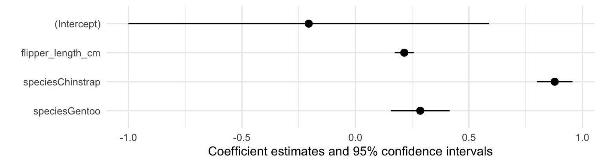
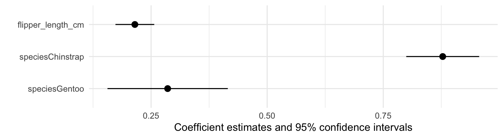
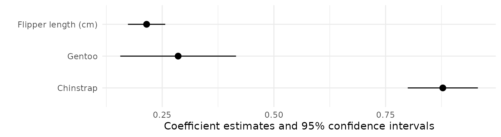
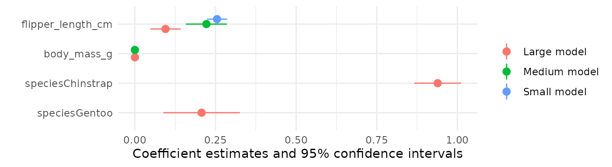
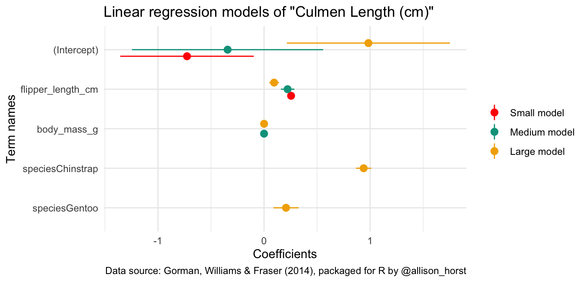
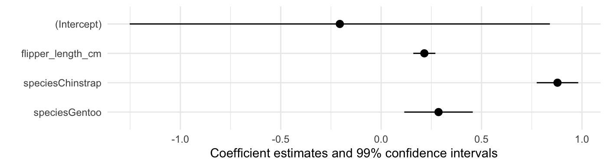
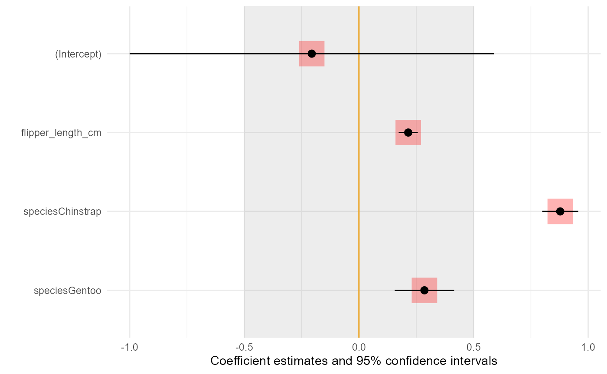

modelplot: Plot model coefficients with confidence intervals
Source: vignettes/modelplot.Rmd
modelplot.Rmdmodelplot is a function from the modelsummary package. It allows you to plot model estimates and confidence intervals. It makes it easy to subset, rename, reorder, and customize plots using same mechanics as in modelsummary.
To illustrate how the function works, we fit a linear model to data about the Palmer Penguins:
url <- 'https://vincentarelbundock.github.io/Rdatasets/csv/palmerpenguins/penguins.csv'
dat <- read.csv(url)
# rescale mm -> cm
dat$bill_length_cm <- dat$bill_length_mm / 10
dat$flipper_length_cm <- dat$flipper_length_mm / 10
mod <- lm(bill_length_cm ~ flipper_length_cm + species, data = dat)Then, we load the modelsummary library and call modelplot:
library(modelsummary)
modelplot(mod)
Rename, reorder, subset
modelplot uses the same mechanics as modelsummary to rename, reorder, and subset estimates. First, you can use the coef_omit argument. This will omit any coefficient that matches a string or regular expression. To omit the intercept, for example, we can type:
modelplot(mod, coef_omit = 'Interc')
Second, you can use the coef_map argument. coef_map is a named character vector, where names correspond to the original term names, and values correspond the names you want to assign. Any variable that is not included in coef_map will be excluded. Variables will also be drawn in the same order as in coef_map:
cm <- c('speciesChinstrap' = 'Chinstrap',
'speciesGentoo' = 'Gentoo',
'flipper_length_cm' = 'Flipper length (cm)')
modelplot(mod, coef_map = cm)
Several models
The main modelsummary functions allows you to create a table with the results of several models side-by-side, by storing them in a (potentially named) list:
models <- list()
models[['Small model']] <- lm(bill_length_cm ~ flipper_length_cm, data = dat)
models[['Medium model']] <- lm(bill_length_cm ~ flipper_length_cm + body_mass_g, data = dat)
models[['Large model']] <- lm(bill_length_cm ~ flipper_length_cm + body_mass_g + species, data = dat)
modelsummary(models, statistic = 'conf.int')| Small model | Medium model | Large model | |
|---|---|---|---|
| (Intercept) | -0.726 | -0.344 | 0.984 |
| [-1.356, -0.097] | [-1.245, 0.557] | [0.215, 1.752] | |
| flipper_length_cm | 0.255 | 0.222 | 0.095 |
| [0.224, 0.286] | [0.158, 0.285] | [0.048, 0.142] | |
| body_mass_g | 0.000 | 0.000 | |
| [0.000, 0.000] | [0.000, 0.000] | ||
| speciesChinstrap | 0.939 | ||
| [0.867, 1.011] | |||
| speciesGentoo | 0.207 | ||
| [0.088, 0.326] | |||
| Num.Obs. | 342 | 342 | 342 |
| R2 | 0.431 | 0.433 | 0.817 |
| R2 Adj. | 0.429 | 0.430 | 0.815 |
| AIC | 369.0 | 369.6 | -12.6 |
| BIC | 380.5 | 385.0 | 10.4 |
| Log.Lik. | -181.499 | -180.813 | 12.313 |
| F | 257.092 | 129.365 | 375.333 |
modelplot works the same way:
modelplot(models, coef_omit = 'Interc')
Instead of displaying results with “dodged” side-by-side lines, you can also use facet:
modelplot(models, facet = TRUE)Customizing your plots
The graphs produced by modelplot are simple ggplot2 objects. You can thus post-process them using the normal suite of functions available for all objects of this type. Here, we change the axis labels, add a title and a caption, and use a color scheme inspired by Wes Anderson’s Darjeeling Limited:
library(wesanderson)
library(ggplot2)
modelplot(models) +
labs(x = 'Coefficients',
y = 'Term names',
title = 'Linear regression models of "Bill Length (cm)"',
caption = "Data source: Gorman, Williams & Fraser (2014), packaged for R by @apreshill and @allison_horst") +
scale_color_manual(values = wes_palette('Darjeeling1'))
In ggplot2, some visual choices must be made when calling the “geom”, rather than with post-processing functions. For instance, the size, color, fatten, linetype arguments must all be specified inside the geom_pointrange function for them to take effect. modelplot will pass any unknown argument to geom_pointrange, so users can simply call:
modelplot(mod, size = 1, fatten = .7, color = 'darkgreen', linetype = 'dotted') +
theme_classic()
Confidence intervals: change or omit
You can change the \(\alpha\) level of your confidence intervals by changing the conf_level argument:
modelplot(mod, conf_level = .99)
modelplot(mod, conf_level = NULL)
Background annotations
Sometimes, you want to display annotations on a plot, but you would like to draw these annotations behind the geom_pointrange which displays the estimates. Since modelplot draws the geom_pointrange automatically, any ggplot2 annotation you add to the plot using + will be added on top of the existing ones.
To add your annotations in the background, you can pass them as a list of ggplot2 “geoms”:
library(ggplot2)
b <- list(geom_vline(xintercept = 0, color = 'orange'),
annotate("rect", alpha = .1,
xmin = -.5, xmax = .5,
ymin = -Inf, ymax = Inf),
geom_point(aes(y = term, x = estimate), alpha = .3,
size = 10, color = 'red', shape = 'square'))
modelplot(mod, background = b)
Raw data
If you would like to customize the plots even more than what modelplot allows, you can obtain the raw data used to draw the plots by setting draw=FALSE:
modelplot(models, draw = FALSE)## term model estimate conf.low conf.high
## 10 speciesGentoo Large model 2.069585e-01 8.827391e-02 0.3256431416
## 9 speciesChinstrap Large model 9.389473e-01 8.665103e-01 1.0113842270
## 8 body_mass_g Large model 2.950814e-04 2.280889e-04 0.0003620740
## 5 body_mass_g Medium model 6.622186e-05 -4.534709e-05 0.0001777908
## 7 flipper_length_cm Large model 9.493830e-02 4.830906e-02 0.1415675331
## 4 flipper_length_cm Medium model 2.218655e-01 1.582365e-01 0.2854944200
## 2 flipper_length_cm Small model 2.547682e-01 2.235148e-01 0.2860215636
## 6 (Intercept) Large model 9.837549e-01 2.152668e-01 1.7522429809
## 3 (Intercept) Medium model -3.436694e-01 -1.244658e+00 0.5573192182
## 1 (Intercept) Small model -7.264868e-01 -1.355947e+00 -0.0970268923